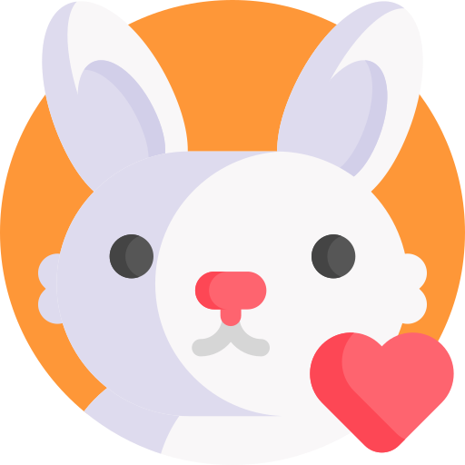

Caza ilegal: La caza ilegal es DEMASIADO importante detenerla debido a que el mundo esta mejoranndo en contaminación no sirve de nada tener un mundo sano si las especies que nos ayudan a sobrevivir mueren. Creas o no este tema se relaciona con el tema 1 el cual es la contaminacion, no tanto con el clima pero si con las empresas, empresas que crean productos de bellesa, cuidado personal y cosas de cosmeticos pueden llegar a usar animales para probar sus productos, acto el cual demuestra la crueldad y desesperacion de las empresas por conseguir exito y dinero, afortunadamente estas empresas que usan a animales para pruebas han sido expuestas e incluso demandadas y cerradas, pero muchas empresas tienen certificado de que no usan a animales para pruebas
Ejemplos: Personas que cazan de manera ilegal: Personas que matan animales en peligro de extinción, Personas que no tienen el certificado de permiso para cazas ciertos animales en ciertas sonas
Circos: Los circos son un medio de entrewtenimiento muy pero muy famoso, pero la popularidad que ganan hacen que los dueños piensen que tienen el poder de hacer lo que quieran, cosa que no lo tienen, creen que esta bien usar a animales por simple entretenimiento del ser humano, y solo lo hacen por dinero, dinero el cual ganan mediante el maltrato y privamiento de los animales, esto es muy grave, entonces, si piensas en ir al circo, por favor, comprueba que no usen animales
Empresas de belleza: Hay empresas de belleza que usan animales para la creacion y experimentacion de productos, productos los cuales se venden de manera normal en los supermercados, famacias y tiendas locales sin el minimo problema, ya que la gente no tiene idea de lo cruel e inhumano que es el proceso, afortunadamente las empresas empesaron ausar etiquetas certificadas las cuales son otorgadas al comprobar que sus productos no se prueban en animales, estas tienen un conejo y el texto "cruelty free"
 Lista de marcas mas famosas que experimentan con animales
Lista de marcas mas famosas que experimentan con animales
- Avon
- Burberry
- Chanel
- Dior
- Johnson & Johnson
- MAC
- Ponds
- Sephora
- Vaseline
- Yves Saint Laurent

 Maltrato animal
Maltrato animal
03/03/22
Explicaciones del maltrato
 Investigacion
Investigacion
03/03/22
Explicaciones del maltrato
De este tema hay muchos datos y pruebas de como la crueldad crece y crece, y como la humanidad ya no parece humana, de como ya no tenemos sentimientos. ¿Por qué es importante evitar el maltrato animal? Los animales son constantemente maltratados, vulnerando de esta forma su vida, ya que se lesiona su integridad física y psicológica; en otras palabras, su salud; por personas que no entienden que aquéllos son capaces de sentir el mismo dolor y sufrimiento que un ser humano.Fin de mi blog :)